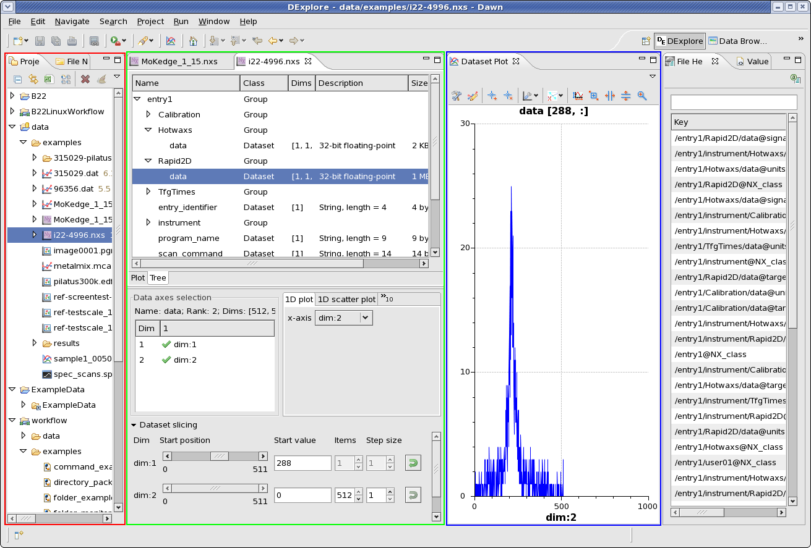

3. Introduction to DAWN, Perspectives and Views¶
DAWN is an incredibly flexible program capable of a wide variety of data processing and analysis procedures. To simplify its use these different functionalities have been group into Perspectives which link commonly used features, grouping them in a clear and logical fashion.
Views are subsections of perspectives; each tab showing different information (a plot, the contents of a file, a tool...) is a View. The Views shown and how they interact are what makes each perspective different,
While it is perfectly possible to use any View in any Perspective (accessing them via the Window → Show View menu), it will always be easiest to use the default Views shown in a Perspective. For example, a python console will work with any Perspective in DAWN but will work best, with full functionality, when used in the Python or PyDev Perspectives.
What follows is an introduction to a few of the main Perspectives available in Dawn.
3.1. Welcome Page: Avaliable Perspectives¶
While not strictly a Perspective in itself, the Home page is the easiest place to find all the Perspectives available. Clicking on the Tools or the Perspectives options takes you to a the Perspective List.
3.2. Data Browsing¶
A simple yet powerful group of features for data viewing. Generally a sensible first perspective for those new to DAWN that want to investigate its data viewing capabilities. Recommended as the best perspective for using DAWN on small screens.
The main Views in the Data Browsing Perspective are:
- The Project Explorer
- The File Editor (which in the above screen shot contains the file i22-4996.nxs and shows the Plot View infront of the Nexus Tree tab)
- The Data View (which shows all the data a file contains and allows it to be selected for plotting
3.2.1. The Project Explorer¶
This element provides a way to organise and access sets of data files. A set of files can be imported to the explorer in a project. To create such a project, select from the File menu “New > Project... > Data > Data Project” (or bring up the context menu with a third mouse button click in the Project Explorer area). Specify a project name, folder and the directory containing the files. A project will be created with all the files linked in (not copied). A file listed in the project can be opened in an editor by double clicking .
3.2.2. The File Editor¶
Different file editor are used for different file types. If the file and data types are recognised by DAWN the editor will always contain a Plot View. The editor shown in the above screen shot is specific for Nexus/HDF5 files, the tab behind the Plot View Tab contains the Nexus Tree view.
When many files are opened, the tabs at the top of the editor area can be used to switch between files.
3.2.3. The Data View¶
The Data View contains a table which shows the name and shape of every data set in a file and allows them to be selected for display in the File Editor Plot View.
If the Dataset is multidimensional the Data View shows the Data Slicing table and associated actions.
3.3. DExplore¶
For true flexibility in data viewing DExplore is the perspective of choice. The default layout is divided horizontally into four parts: a Project Explorer pane on the left; a central section split vertically into a editor-holding area where opened files are displayed at the top and a dataset inspector view below; a plot view; and its accompanying side plot view.
The main Views in the Dexplore perspective are:
- The Project Explorer (as in the Data Browsing Perspective)
- The Dataset Inspector (which contains a File Editor combined with Data viewing and slicing options
- The Dataset plot
3.3.1. The Dataset Inspector¶
The dataset inspector provides a means to examine a dataset selected in the current editor. This view contains an axes selection table, a multi-dimensional slicer and an inspection type selector. A dataset is considered to be an N-dimensional array of items where each item is an element or a compound of elements. The axes selection table allows a choice of datasets to be associated with dimensions of the dataset and are used as abscissa values for plotting and displaying values against. By default, at least one integer dataset called “dim:n” is included per dimension that ranges from 1 to L inclusive where L is the length of the dimension. The slicer allows (hyper-)rectangular subset (or slice) of the dataset to use selected. Each dimension has an axis name, a slider, a start value display, a slice length adjuster, a slice step adjuster, and a reset button. The start position is chosen by moving the slider left or right. The number of items used and the step between items is adjusted by clicking the arrow buttons or by entering the desired values. The final element is the inspection type selector. This allows various visualisations and examinations to be performed on the sliced dataset. These are displayed in the plot view, dataset table view or image explorer view. These displays can be configured to show dimensions by selecting their corresponding axis from the drop-down combination boxes.
3.3.2. The Dataset Plot¶
The Plot View in the Dataset Plot is the main window where all graphical plotting is displayed. A plot view is a generic plotting UI, that allows graphical plotting of different scalar dataset types.
3.4. Other Perspectives¶
Other general data analysis perspectives (Workflows, Python/Jython scripting...) are available but it is highly recommended to become familiar with all the functionality in the Data Browsing and DExplorer perspectives before using these more advanced features.
3.5. Switching Perspectives¶
There are many ways to switch between Perspectives. Switching is a simple process and shouldn’t require you to close data files. To switch perspectives either:
- The perspective toolbar allows fast switching between currently open perspectives and new perspectives to be opened using the Open Perspective button.
- On the main title bar menu, the Window -> Open Perspective Menu allows you to choose from the recently used perspectives or by selecting Other... produces a list of all the available perspectives.
- Returning to the Home screen Perspective list (only if you are really lost)
3.6. Troubleshooting Perspectives¶
Perspectives are very powerful and flexible but they can be daunting to someone unfamiliar with the concept so what should you do if the perspective doesn’t look right, or you cant find the plot/data tab/header view...
Part of the power of DAWN is the perspectives can be tailored to what you us most. This can be problematic to a new users since it is possible to close useful tabs and not be able to find them again.
If you can not find a tab that you used to have there are various steps you can take:
*First check you are in the correct perspective, maybe switch between the Data Browser and DExplore to check the feature you remember is not just in a different perspective
*If you have just accidentally closed a useful tab and cant find it on the main title bar menu, the Window -> Show View and Show Plot View items should help you locate accidentally closed tabs
*If all else fails Window -> Reset Perspective, resets the perspective to show its defaults view. WARNING: This will undo any customisations you have done to your perspective.